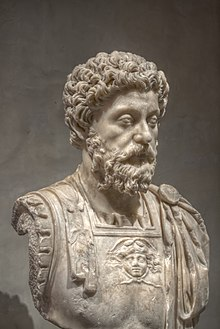

He was the last of the rulers known as the Five Good Emperors, and the last emperor of the Pax Romana, an age of relative peace and stability for the Roman Empire. He served as Roman consul in 140, 145, and 161.
markMarcus was born during the reign of Emperor Hadrian to the emperor's nephew and his wife, the praetor Marcus Annius Verus (III) and the heiress Domitia Lucilla. Following the death of his father,Marcus was raised by his mother and grandfather Marcus Annius Verus (II).
